Building a gaming PC
A gaming PC needs all of the following parts (click on the images to learn more):
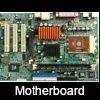 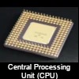 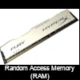 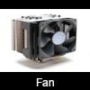 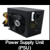 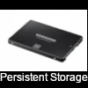 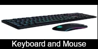 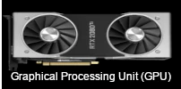Optional:
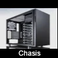According to gamespot to be able to play Assassin Creed Valhalla at 1080p and 30 FPS you need a system that has parts with the following specs:
- CPU
6 - 4 cores. 3.2 - 3.6 GHz - RAM
8 GB - GPU
- Pixel Rate
37 - 72 GP/s - Texture Rate
149 - 120 GT/s - Bandwidth
224 - 192 GB/s - vRAM
8 - 6 GB
- Pixel Rate
50 GBI will be using the game Assassin Creed Valhalla system requirements as a performance reference because it is system demanding and can serve as a benchmark when we go through the parts
With that in mind lets apply that to each part
Motherboard
The motherboard combines the rest of the parts together and facilitate the communication between them. Choosing a good motherboard make sure all the other chips are communicating effectively.
Things to look for in a motherboard:
- CPU chip-set support
- What type and version of PCI-e does it have?
These are the slots where you plug in various cards. They come in different sizes: x1, x4, x8 and x16. GPU cards are typically x16 pins wide.
A test made by gamersnexus showed that there is no real difference in performance between x8 and x16 card slots.
This probably comes in handy if you find a cheaper motherboard that do not have x16 card slot.
Not all x8 card slots work. Make sure the motherboard has an open ended x8 card slot to accommodate wider cards. Although they will only be using a x8 card slot throughput.
- How many PCI slots.
you want to aim at at a minimum you would need 1 GPU slot and 1 RAM slot. and make sure the PCI is v2.0 and up
- What size is it.
bigger forms have more features and expansion/card slots. Smaller ones are more compact
Below are the 3 common sizes.
motherboards come in different models and every model is compatable with certain CPU chip-set.
It is important to decide on the CPU before purchasing a motherboard and not vice versa. That way you are not limited to a certain chip-set to choose from.
Even if the CPU is compatable with a motherboard You might need to update the motherboard BIOS to recognize the new chip-set model. and to do that you would need to have a CPU that is already compatable with the motherboard in order to be able to access the BIOS and update it.
Back to top >>
Central Processing Unit (CPU)
CPU purpose is to process software instructions. It is important to have a fast processor because slow processor contribute to the game lag.
Things to look for in a CPU:
- speed (in GHz)
A 3.2 GHz CPU process 3.2 billion instructions per second. based on our reference the game needs 6 cores 3.2 GHz or 4 cores 3.6 GHz to play @ 1080p 30FPS
- Number of Cores.
A core acts as a an independent CPU. For example a 3.2GHz dual core CPU means it has two procesors that work at 3.2 GHz. Modern CPUs are at least dual core.
more cores does not mean faster CPU. In our reference game a 6 core 3.2 GHz CPU does not mean6*3.2. Rather the CPU capacty increase. which enhances the program performance.Game reference: CPU
Based on my research it seems that 4 cores is a good number for most games. And many of these CPUs can be over clocked. so the ryzen can be clocked to 3.6 GHz. Both CPU makers are great but Ryzen tend to have cheaper CPUs that almost the same perfomance as intel CPUs.6 -4 cores. 3.2 - 3.6 GHz
Back to top >>
Random Access Memory (RAM)
RAM is a temporary memory that holds instructions for the CPU for faster access.Things to look for in a RAM
- Capacity (in GB)
More capacty means more data can be hold in the RAM.
- speed (in MHz)
Speed determine the speed the RAM communicates the data with the other part. RAMs come in many speeds from 1,600 MHz to 3,000+
More RAM speed or size?
Short answer is more size. RAMs are fairly fast in storing and retrieving data.
Game reference: RAM
8 GBThere is no mention of speed in the RAM specs but I would go with 6 to 8 GB DDR4 RAM with 2,133 or 2,400 MHz should be good for most games.
Graphical Processing Unit (GPU)
GPU takes care of processing graphical instructions.
I have decided to omitt the generic GPU speed and memory speed along with other factors in favor of derived metrics that, in my opinion give a clearer measure of performance.
Things to look for in a GPU
- Pixel Rate = (GPU speed) * (ROP/CU).
Measures the rate pixel render on screen
- Texture Rate = (GPU speed) * (TMU).
Measures the rate texture render on screen
- Graphic layer ratio = Texture Rate/Pixel Rate.
relationship between texture and pixel rendering
This is a measure i derived and thought might be useful. from what little i have read the texture is a layer that is rendered on top of pixels. smaller texture or greater pixel rate is better
- Bandwidth = vRAM speed * vRAM size * card bus width.
- vRAM size (GB)
Affects the communication speed between the GPU and the other parts of the system.
Back to top >>Game reference: GPU
- Pixel Rate
37 - 72 GP/s - Texture Rate
149 - 120 GT/s - Bandwidth
223 - 192 GB/s - vRAM
8 - 6 GB
While there are many factors that affects a GPU speed. The bandwidth gives pretty good measure of performance. It is calculated byFor a quick gauge the GPU bandwidthI decided to add these 4 factors because i think they
Long Term Persistent Storage
Things to look for in storage device:
- size (GB)
- speed (GHz)
These unlike RAM will not lose the data when the PC is turned off. There is two types:
- Hard Disk Drive (HDD) older model
- Solid State Drive (SSD) newer model
The HDD is an old model. It is slower than an SSD but cheaper.
SSD is is the new storage model. It has a faster boot time and faster file transfers than HDD but it is more expensive as well.
where does it make a difference?
SSD should be you go to storage model. The price comes into play only when you want to buy a huge amount of storage. i.e 500GB+
Below are different forms of SSD 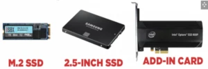
Back to top >>
Cooling sources
You need some cooling source for your system to avoid overheating. The most common source is a regular fan. There are other novel ways like dunking the system into an oil bath.
Things to look for in a fan
- Number of pins in the fans plug
Depending on the number of pins some fans can be controlled by the user and some just work at full speed all the time.
Back to top >>
Power Supply
PSUs come in 3 forms 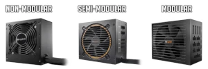Non-Modular: Comes with all the cables soldered
Semi-Modular: will have the basic cables soldered to the unit, like the motherboard connector, the CPU cable, and the PCIe power connector
Modular:Comes without any cables soldered to the unit.
There is no performance difference between the 3 types. it is for convenience and aesthetic features. Modular PSUs are the most expensive. The non-modular is the cheapest, and semi-modular is between
Things to look for in a PSU
-
Power supply
You would need enough power to run your system with enough buffer to avoid any system shut downs.
you want to aim for at least 20% more power than your total system needs.
It is recommended that you have 80% more if you use a regular PSU and 50% more if you use a labeled PSU
-
Efficiency rating
PSU comes with an 80+ rating which means that the unit is at least 80% efficient at different workloads (20%,50% and 100%). so at 100% workload a PSU will supply at least 80%.
some PSUs also come with different labels like bronze,silver,gold,platinum, or titanium.
An 80+ bronze PSU at 20% and 100% workload would be 82% efficient. but 85% efficient at 50% workload.
labeled PSUs are most efficient at 50% or peak workload. aim for 50% workload otherwise a regular 80+ PSU is fine.
when you figure out your system total power needs plug the numbers in the formulas below to figure out the actual power needed.
labeledPSU = total-sys-power/.5
regularPSU = total-sys-power/.8
Back to top >>
Display Monitor
A good monitor is one that is capable of displaying with the resolution you want and with the FPS you want. I have wrote an intro to display monitors that talks in more detail.
Things to look for in a Display Monitor
- Native aspect ratio.
width is the physical dimension of the Display my research showed me that a standard gaming display is 27-30 (diagonal) inches. with support for at least 1080p resolution.
- FPS support
more frames = smoother picture. This can range from 32MHz to 128MHz movies run on 30FPS so you probably would not need more than 30-32 FPS you do not need more than 32FPS.
Back to top >>
Keyboard and Mouse
If you want to game you want a keyboard that is wide enough and fast tapping and reaction time.
Things to look for in a Keyboard
- Keyboard size
- Keys type
- Reaction time
Back to top >>
Chassis
Chassis are optional, Its just a way to neatly orgnize everything. you can hang your parts on the wall if you want to.
Things to look for in a Chassis
-
Size
You need to make sure there is enough space to accommodate all the parts easily.
-
Air flow
You want it to have a good air circulation. if heat cannot escape it will create what is called hot spots or pockets that can ruin your system.
Building a Computer can be a fun activity once you become familiar with its components. I highly recommend you check pcpartpicker for all your parts. They have pre-built systems and also a more detailed option menu for each part
I hope this article was helpful to you.
- Capacity (in GB)